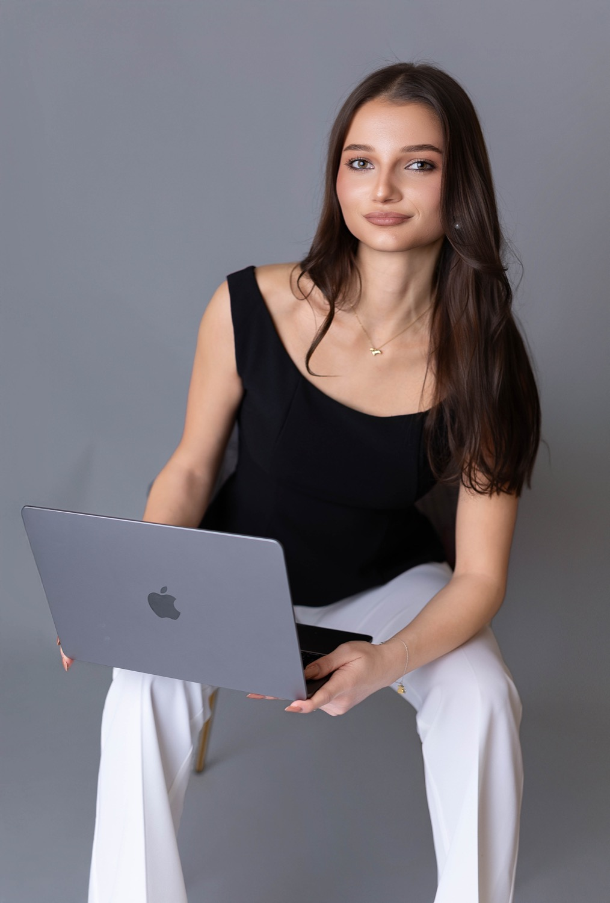
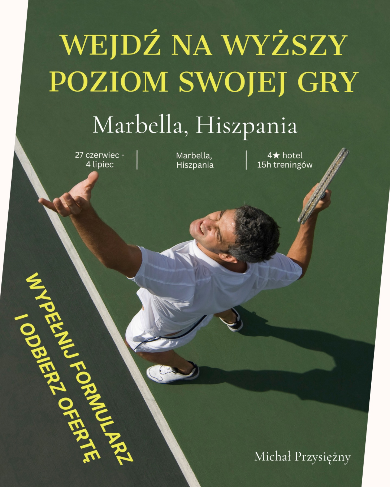
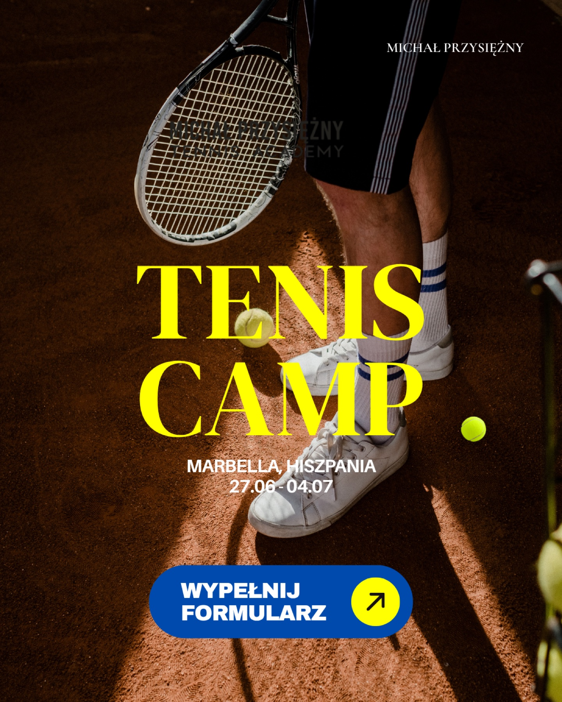
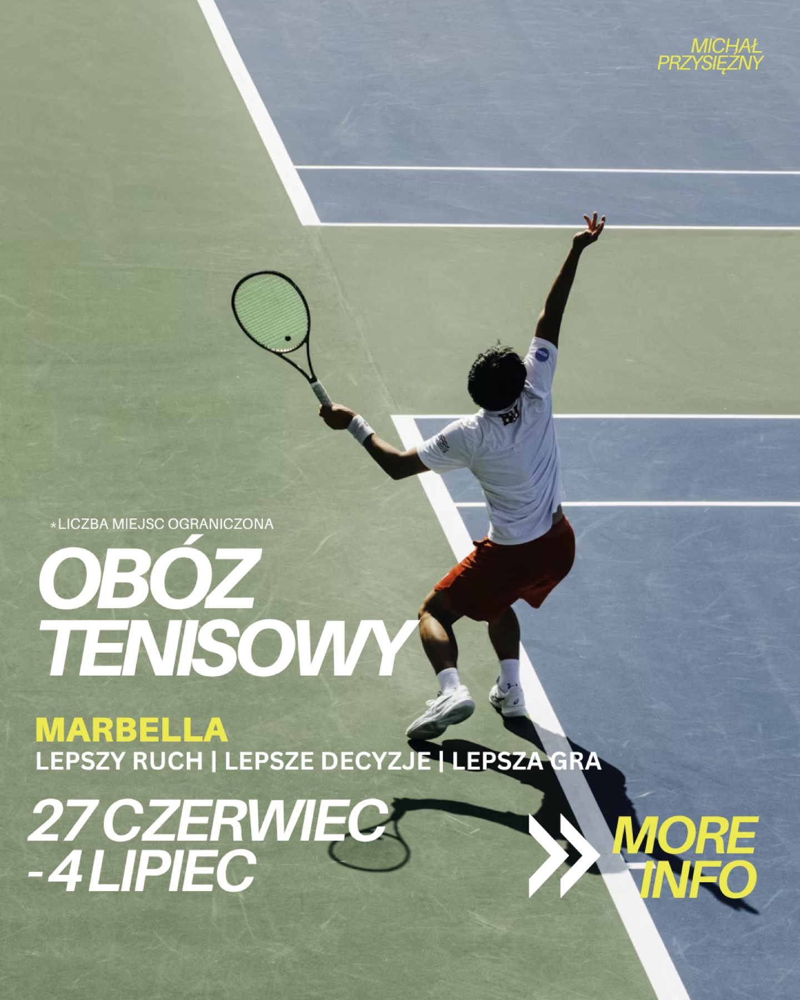
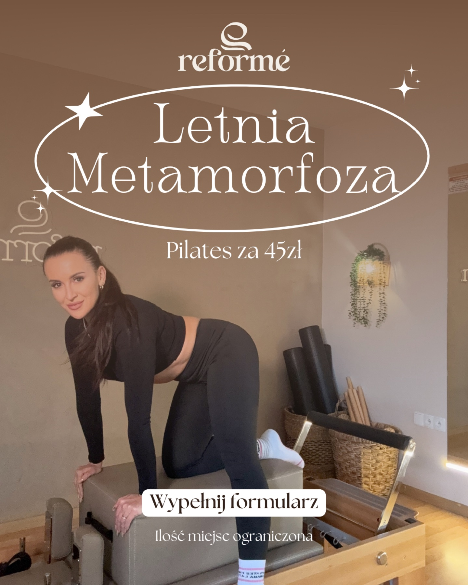
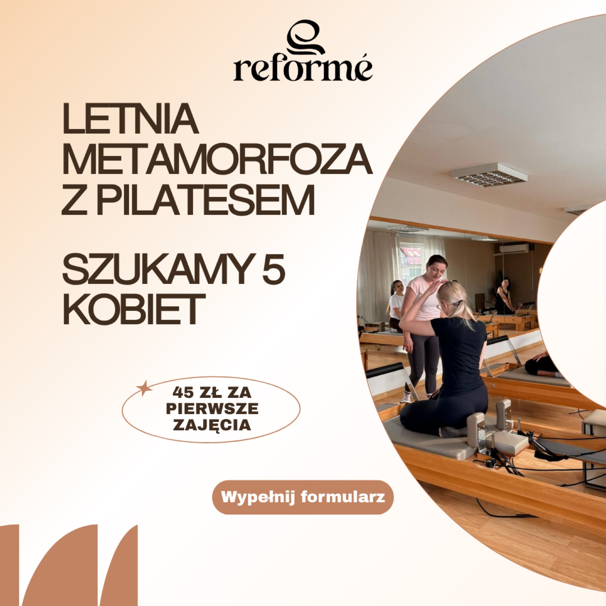
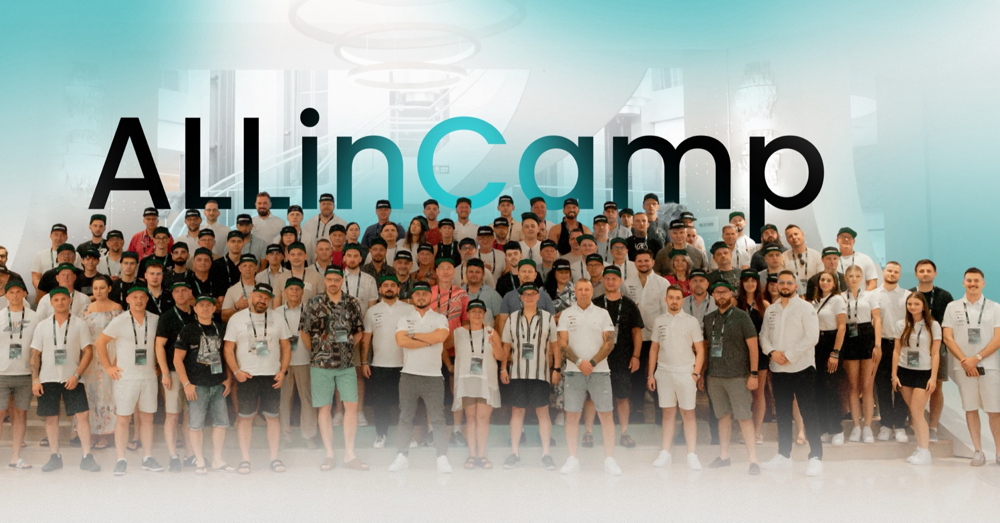
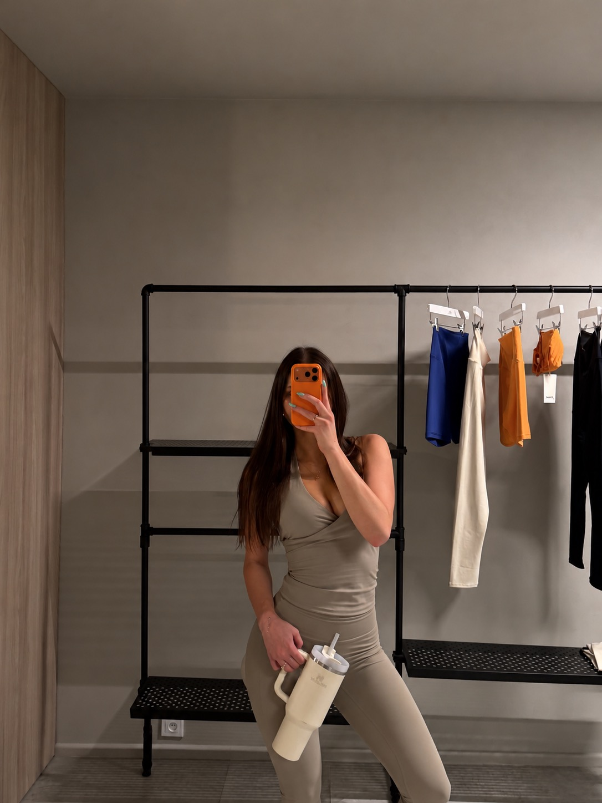

Pilates & wellnessWIDEO
Nie udało się odtworzyć filmu. Otwórz plik wideo ↗
Polka Pilates · chwila dla siebie
Krótki format wideo ze studia — ruch, detale i zaproszenie na zajęcia.
MARKETING · SOCIAL MEDIA · EVENTS
Cześć, jestem Julia. Łączę wyczucie estetyki ze strategią komunikacji. Tworzę treści, prowadzę kampanie i wspieram organizację wydarzeń. Od pierwszej kreacji po relację na żywo — dbam o komunikację i ludzi, którzy za nią stoją.
Poznaj moje projekty ↗
MARKI, Z KTÓRYMI WSPÓŁPRACOWAŁAM
01 — TROCHĘ O MNIE
Mam doświadczenie w marketingu, sprzedaży i bezpośredniej pracy z klientem — od marek pilates po nieruchomości i wydarzenia dla traderów. Nagrywam i montuję wideo, projektuję grafiki, przygotowuję komunikację i koordynuję działania. Łączę kreatywność z organizacją i rozumieniem biznesu.
ZA KAŻDYM PROJEKTEM STOI CZŁOWIEK
Przy pracy, w drodze i pomiędzy kolejnymi pomysłami.
03 — WYDARZENIA & DOŚWIADCZENIA
Współtworzyłam wydarzenie dla traderów — od komunikacji przed wyjazdem po koordynację i relacje na miejscu.
ALLinCAMP / Z BLISKA
Wydarzenie, ludzie i momenty pomiędzy.
OD POMYSŁU DO PUBLIKACJI
To tylko wybrane realizacje z mojego portfolio.
Rolki, kampanie i materiały z wydarzeń.
Wszystkie — pokazuję 3 z 27 realizacji
Nie udało się odtworzyć filmu. Otwórz plik wideo ↗
Krótki format wideo ze studia — ruch, detale i zaproszenie na zajęcia.
Nie udało się odtworzyć filmu. Otwórz plik wideo ↗
Dynamiczny montaż z treningu pilatesu na reformerze.
Nie udało się odtworzyć filmu. Otwórz plik wideo ↗
Rolka promująca trening i zapisy do studia Polka Pilates.
Nie udało się odtworzyć filmu. Otwórz plik wideo ↗
Materiał ze studia łączący trening, atmosferę i promocję zajęć.
Nie udało się odtworzyć filmu. Otwórz plik wideo ↗
Relacja z otwarcia: wnętrza studia, strefa beauty i detale wydarzenia.
Nie udało się odtworzyć filmu. Otwórz plik wideo ↗
Pionowa rolka promująca zajęcia i otwarcie studia.
Nie udało się odtworzyć filmu. Otwórz plik wideo ↗
Rolka zapowiadająca otwarcie studia Polka Pilates w Gliwicach.
Nie udało się odtworzyć filmu. Otwórz plik wideo ↗
Realizacja wideo z obszaru pilates & wellness.
Nie udało się odtworzyć filmu. Otwórz plik wideo ↗
Materiał wideo z sesji, przygotowany w ramach pracy dla biura nieruchomości.

Grafika łącząca sportowy kadr z informacjami o wyjeździe.

Kreacja kampanii wyjazdu tenisowego do Marbelli.

Drugi wariant kreacji promocyjnej wyjazdu tenisowego.

Pionowy format promocyjny łączący fotografię, typografię i wezwanie do działania.

Grafika promocyjna zajęć pilatesu. Oferta, zdjęcie i wyraźne zaproszenie do zapisów.
Nie udało się odtworzyć filmu. Otwórz plik wideo ↗
Rolka z zapleczem pracy przy zabiegach i stylizacji paznokci.
Nie udało się odtworzyć filmu. Otwórz plik wideo ↗
Pionowy materiał promujący zajęcia taneczne.
Nie udało się odtworzyć filmu. Otwórz plik wideo ↗
Materiał wideo promujący zajęcia taneczne.
Nie udało się odtworzyć filmu. Otwórz plik wideo ↗
Rolka promocyjna zajęć tanecznych dla kobiet w Passa Passa.
Nie udało się odtworzyć filmu. Otwórz plik wideo ↗
Rolka promocyjna przygotowana dla studia tańca Passa Passa.
Nie udało się odtworzyć filmu. Otwórz plik wideo ↗
Krótki format wideo z campu — ludzie, atmosfera i wspólne wspomnienia.
Nie udało się odtworzyć filmu. Otwórz plik wideo ↗
Dłuższy format wideo o budowie własnej platformy tradingowej.
Nie udało się odtworzyć filmu. Otwórz plik wideo ↗
Treść edukacyjna dla społeczności traderów.
Nie udało się odtworzyć filmu. Otwórz plik wideo ↗
Rolka promocyjna zachęcająca do udziału i interakcji.
Nie udało się odtworzyć filmu. Otwórz plik wideo ↗
Materiał wideo pokazujący rytuał pielęgnacyjny i detale zabiegu.
Nie udało się odtworzyć filmu. Otwórz plik wideo ↗
Rolka z salonu Oakley — okulary i komunikacja badania wzroku.
Nie udało się odtworzyć filmu. Otwórz plik wideo ↗
Krótka rolka prezentująca stylizacje paznokci.

Zdjęcie grupowe z wydarzenia, przy którego organizacji i komunikacji pracowałam.
Wybierz temat i zajrzyj do środka. Grafiki możesz powiększyć, a filmy odtworzyć z dźwiękiem.
04 — DOŚWIADCZENIE, KTÓRE ŁĄCZĘ
Prowadzę sześć kont w mediach społecznościowych w języku polskim i angielskim. Tworzę komunikację dla projektów z branży fintech: warsztatów tradingowych, webinarów, społeczności traderów, prop tradingu i kont do handlu, a także własnej platformy tradingowej i brokera.
Pracowałam jako managerka biura oraz przy sprzedaży i wynajmie nieruchomości. Zajmowałam się zarządzaniem najmem, promocją ofert i nowych inwestycji oraz marketingiem biura.
Odpowiadałam również za sprawy kadrowe, rozliczenia, wypłaty i rekrutację. Łączyłam codzienną organizację pracy z kontaktem z klientami i promocją.
Pracowałam w obsłudze klienta, oferowałam produkty bankowe, zarządzałam leadami i wspierałam klientów w korzystaniu z bankowości internetowej i mobilnej.
SGH — Zarządzanie Finansami Przedsiębiorstwa, studia magisterskie 2025–2027. International Business na Uniwersytecie Ekonomicznym w Katowicach oraz wymiana Erasmus+ na University of Porto.
05 — MARKETING, ORGANIZACJA & ROZWÓJ STUDIA
Od pierwszego kontaktu z klientem
po codzienną pracę i rozwój studia.
Łączę znajomość branży pilates z doświadczeniem w zarządzaniu biurem, marketingu i obsłudze klienta. Mogę wspierać studio zarówno w codziennej organizacji, jak i w pozyskiwaniu klientów oraz wdrażaniu nowych pomysłów.
Tworzę spójną komunikację, która pokazuje charakter studia, atmosferę zajęć i ludzi, którzy je tworzą. Łączę estetykę z przemyślanym planem publikacji oraz jasnym przekazem oferty.
Mam doświadczenie w prowadzeniu sześciu kont w języku polskim i angielskim oraz w komunikacji marek pilates i wellness.
Prowadzę kampanie nastawione na konkretne cele biznesowe: pozyskanie leadów, czyli kontaktów do zainteresowanych osób, zapisy na zajęcia, nowych klientów i sprzedaż oferty. W studiu pilates oznacza to połączenie reklamy z obsługą zapytań i sprawnym przejściem od zainteresowania do pierwszej wizyty.
Mam doświadczenie w promocji otwarcia studia pilates oraz kampanii wyjazdu tenisowego, która pomogła zebrać wymaganą liczbę uczestników. Patrzę na marketing przez jego przełożenie na zapisy, klientów i sprzedaż.
Łączę promocję wydarzenia z organizacją i koordynacją działań na miejscu. Pracowałam przy ALLinCamp w Turcji dla 150 osób oraz przy ALLinConf — od komunikacji przed wydarzeniem po materiały i relacje z jego przebiegu.
To doświadczenie mogę wykorzystać przy dniach otwartych studia, warsztatach, wyjazdach i wydarzeniach integrujących społeczność wokół pilatesu.
W roli managerki studia chcę łączyć dobrą organizację codziennej pracy z troską o klientów i rozwój biznesu. Wnoszę doświadczenie managerki biura: koordynację pracy, kontakt z klientami, rekrutację, sprawy kadrowe, rozliczenia i działania marketingowe.
Lubię wyznaczać cele, przekładać pomysły na konkretne zadania i doprowadzać je do realizacji. Zależy mi na miejscu, które sprawnie działa, buduje dobre relacje i ma przestrzeń na dalszy rozwój.
PRYWATNIE / MAŁE I WIELKIE PASJE
Najlepiej czuję się wtedy, gdy coś odkrywam. Nowe miejsce, nowy sport, kolejny cel — lubię mieć na co czekać i do czego dążyć.

06 — ZRÓBMY COŚ DOBREGO
Opowiedz mi o swojej marce.
Zacznijmy od dobrego pomysłu.